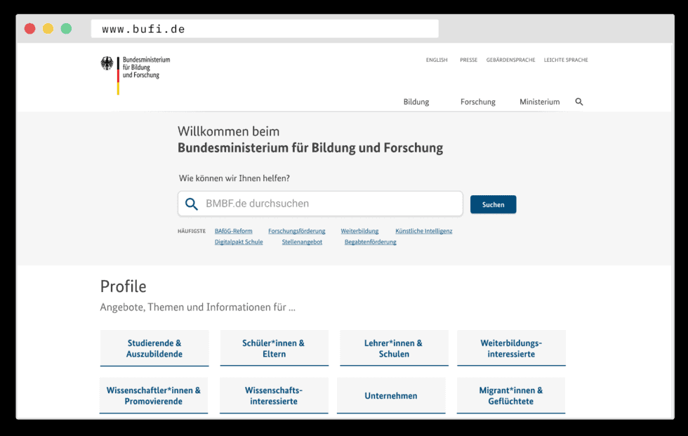
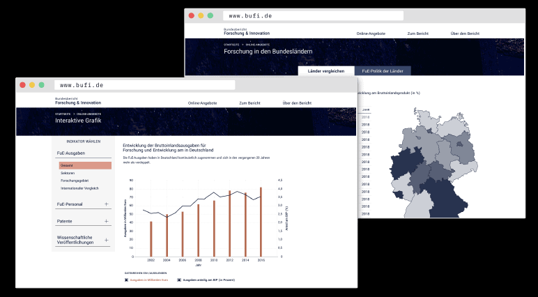

Projekt Webauftritt BMBF 2019
Projekt Webauftritte des Bundesministeriums für Bildung und Forschung
Wie können Hauptseiten und Fachseiten von Ministerien nutzerzentriert gestaltet sein? Wir zeigen am Beispiel des Bundesministeriums für Bildung & Forschung wie Webauftritte aussehen, die sich an den Bedürfnissen der Nutzer:innen und Bürger:innen orientieren, anstatt an internen Strukturen.
Case Study Ministeriumswebseite
Case Study BuFI
+++ Bundesbericht Forschung und Innovation im neuen Design +++
Nach der Prototypisierung durch Tech4Germany wurde der Bundesbericht Forschung und Innovation (BuFI) 2020 entsprechend der Vorschläge in einem neuen Design veröffentlicht.
Eine Herausforderung, zwei Projekte
Wie können Ministerien Bürger:innen und Nutzer:innen in den Fokus Ihres Web-Angebots stellen? Wir zeigen, wie ein nutzerzentriertes und service-orientiertes Angebot gestaltet sein sollte.
Dazu zeichnen wir die Vision der Ministeriumswebseite der Zukunft, auf der Bürger:innen genau die Informationen und Services finden, die sie suchen.
Am Beispiel des Bundesberichts Forschung und Innovation zeigen wir, wie selbst ein 400-Seiten langer Bericht durch ein ein attraktives Online-Angebot ergänzt werden kann, das Nutzer:innen einen echten Mehrwert bietet und alle Berichtsdaten offen und zur Weiterverarbeitung zugänglich macht.
Vorgehen
Um ein nutzerzentriertes Online-Angebot zu erstellen, haben wir Interviews und Nutzertests durchgeführt und Webseitenstatistiken ausgewertet. Mithilfe von Kreativmethoden haben wir verschiedene Ideen entwickelt, die die Probleme der Nutzer:innen lösen könnten und die Besten iterativ weiterentwickelt. Durch den stetigen Einbezug von Nutzerfeedback entstand innerhalb von zehn Wochen ein finales Design.
\ User Research
\ Prototyping & Testing
\ Finales Design

Die Ministeriumsseite der Zukunft
Direkte Ansprache der Nutzer:innen
Nutzerzentrierte Struktur, die verschiedene Nutzergruppen anspricht und sich nicht an internen Strukturen orientiert
Service-orientierte Inhalte, die echte Probleme der Bürger:innen lösen

Übergreifende Empfehlungen für digitale Berührungspunkte
1 Nutzerzentrierung
Für viele Bürger:innen ist die gefühlte Distanz zu “denen in Berlin” meist hoch. Umso größer ist das Potenzial nutzerzentrierter digitaler Berührungspunkte zwischen Bundesbehörden und der Gesellschaft. Online-Angebote sollten daher immer den/die Nutzer*in in den Fokus stellen.
2 Service-Orientierung
Bürger:innen sind aus privatem und beruflichem Umfeld einfache und nutzerfreundliche Online-Services gewohnt. Dadurch steigt auch die Erwartungshaltung gegenüber staatlichen Akteuren. Digitale Services müssen dabei von Grund auf nutzerzentriert entwickelt werden. Ein analoges Formular, das nicht den Nutzer in den Vordergrund stellt wird durch die Überführung in ein digitales Format allein noch nicht nutzerfreundlicher.
3 Agile Arbeitsweisen
Durch den Einsatz agiler Arbeitsweisen können kleine Inkremente schnell fertiggestellt werden und damit schon früh Wert für Nutzer:innen geschaffen werden. Gerade in der öffentlichen Verwaltung bedarf es jedoch klarer Signale der Führungsebene, agiles Arbeiten etablieren zu wollen und Räume für diese Arbeitsweisen zu schaffen.
4 Open Source
Bei der Erstellung von Anwendungen sollte der Code von Beginn an mit der Öffentlichkeit geteilt werden, sodass alle von der geleisteten Arbeit profitieren können. Das Zurückgreifen auf Open Source Code und Standards anderer Behörden kann ein probates Mittel sein, um in kurzer Zeit, erprobte und nutzerfreundliche Leistungen zu launchen.
5 Einheitliche Standards
Wir empfehlen die Etablierung einer zentralen Einheit auf Bundesebene, die Standards für Online-Auftritte und Leistungen definiert und Know-How an die verschiedenen Behörden vermittelt. So kann gewährleistet werden, dass der digitale Auftritt der Bundesbehörden gegenüber Bürger:innen von hoher Qualität und Konsistenz geprägt ist.
Unsere Ergebnisse sind frei verfügbar
Dokumentation:
Vorgehen & Ergebnisse zum Projekt Ministeriumswebseite der Zukunft
Download
Dokumentation
Vorgehen & Ergebnisse zum Projekt Bundesbericht Forschung und Innovation
Download
Design Prototyp
Webauftritt des Bundesbericht Forschung und Innovation
Link
Umsetzung: Webauftritt des Bundesbericht Live
Video
_“Der Bericht wird online völlig neu präsentiert: aufgeräumt und übersichtlich, vor allem aber interaktiv. In Zusammenarbeit mit Tech4Germany, der Digitalisierungsinitiative unter der Schirmherrschaft des Bundeskanzleramts, wurde die Website des Bundesberichts nutzerzentriert weiterentwickelt und ist im neuen Look ab jetzt online verfügbar.” _ \ Pressemitteilung 13.05.2020, BMBF
Der neue BuFI
Pressemitteilung BMBF
TEAM

Antonia Borkenhagen \ Product Fellow

Katharina Hasenlust \ Design Fellow
Sarah Hilker \ UI/UX Design Fellow

Carolin Ullrich \ Product Fellow
Projektpartner
Katharina Erbe \ Digitallotsin

Martin Kleinemas \ Digitallotse